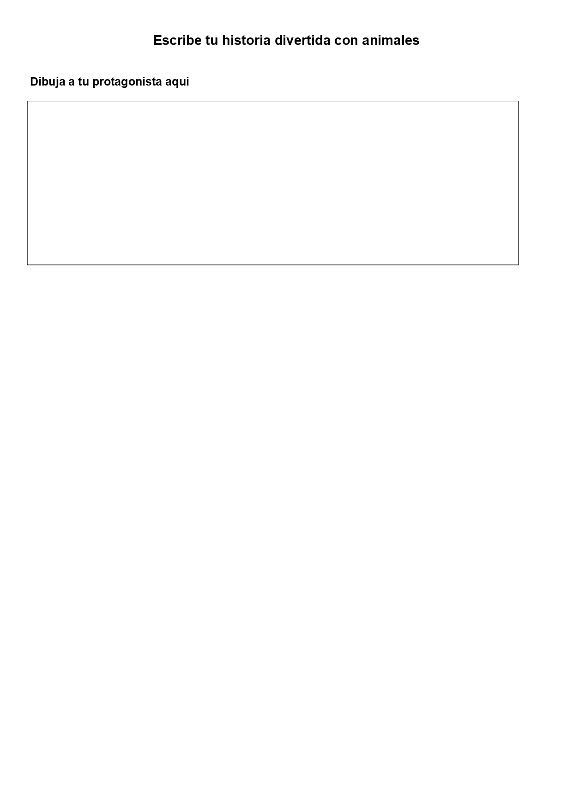

¿Sabías que en nuestro planeta viven muchísimos animales diferentes?
¡Hoy vamos a aprender a clasificarlos!
A continuación, vas a realizar una serie de ejercicios que te van ayudar a comprender mejor los animales .
¡No te pierdas ningún paso!
¿Sabías que en nuestro planeta viven muchísimos animales diferentes?
¡Hoy vamos a aprender a clasificarlos!
A continuación, vas a realizar una serie de ejercicios que te van ayudar a comprender mejor los animales .
¡No te pierdas ningún paso!
Observa los siguientes animales no vayas deprisa, tómate el tiempo necesario para observarlos con detalle.


Para empezar ya tu camino hacia el reto final, vas a realizar una actividad con todos y todas las compañeras de la clase. Vas hacer una lista con los animales que aparecen en la actividad anterior y la vas a escribir en tu libreta.
Las siguientes preguntas te van ayudar a realizar esa lista:
1-. ¿Cómo es este animal?¿Tiene pelo, plumas o escamas?¿Qué color tiene?¿Es grande o pequeño?
2. ¿Cómo se mueve?¿Camina, nada, vuela o salta?¿Tiene patas, alas o aletas?
3. ¿Dónde vive?¿En la selva, en el mar, en la granja, en la casa...?¿Hace frío o calor donde vive?
4. ¿Qué come?¿Come carne, plantas o las dos cosas?¿Qué comida crees que le gusta más?
5. ¿Cómo es su cuerpo?¿Cuántas patas tiene?¿Tiene cola, cuernos o pico?¿Tiene dientes? ¿Cómo son?
6. ¿Cómo se protege?¿Se esconde, corre muy rápido, tiene pinchos o veneno?
7. ¿Tiene crías?¿Cómo se llaman sus bebés?¿Los cuida su mamá o papá?
8. ¿Qué lo hace especial o diferente de otros animales?¿Tiene alguna habilidad divertida o rara?
Vuelve a ver las imágenes anteriores y en pareja, elige un animal. Si quieres, puedes decrite por otro que no esté en las imágenes.
¿Sabes como crear tu historia? Para ello, voy a darte una pequeña guía que te ayudará a diseñarla.


¿Cuántas veces te has distraído en estos ejercicios?
Seguro que cuando estabas haciendo esta actividad ha ocurrido algo que te ha hecho parar. Puede que alguien pegase a la puerta, que el profe haya hablado con alguien, que hayas oído un ruido en la calle, que te hayas acordado de algo que hiciste ayer…
Cuando aprendemos estamos rodeados de cosas que nos pueden distraer. Al volver a la actividad te cuesta más trabajo centrarte.
Por eso es importante que aprendas a controlar tus distracciones. Te doy algunos consejos:
Página 4 de 17
Obra publicada con Licencia Creative Commons Reconocimiento Compartir igual 4.0